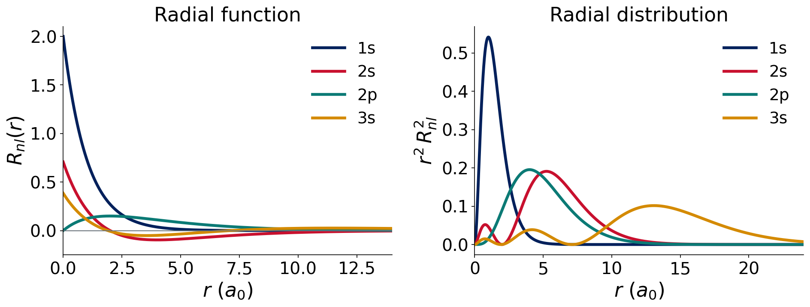
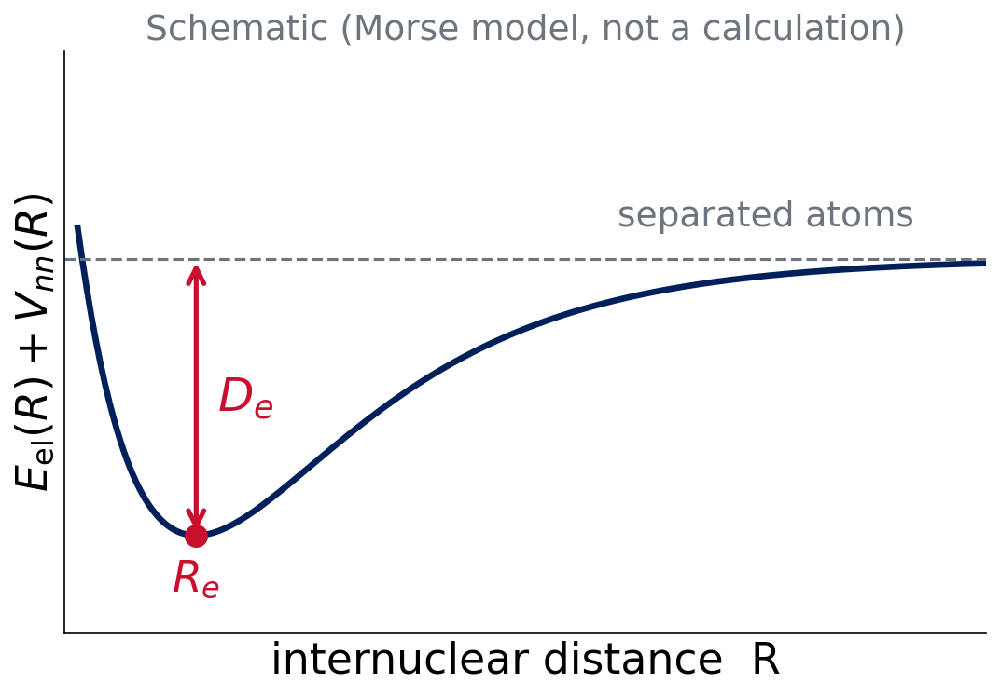

Lecture 1 · The molecular Schrödinger equation
What we want to compute, and why we can’t do it exactly
Advanced Physical Chemistry · Florida Institute of Technology
Why compute?
What does a computational chemist predict?
- Reaction energies: is the reaction downhill, and by how much?
- Barriers: how fast could it go?
- Structures: bond lengths, angles, conformers
- Interaction energies: why molecules stick together
A calculation gives numbers with errors. This course teaches you where the errors come from and how to choose a method.
Course roadmap
- Ten experiments, each a small benchmark with Q-Chem (through IQmol)
- Lectures 1–3: the wave function and the basis set (Experiment 1)
- Lectures 4–6: the Hamiltonian and the functionals (Experiment 2)
- Later: test, break and choose methods
Two big approximations in every calculation:
- Approximate Ψ: basis set
- Approximate Ĥ: method (HF, DFT, …)
Today
- Review: the Schrödinger equation and the hydrogen atom
- The molecular Hamiltonian and atomic units
- Born–Oppenheimer: the potential energy surface
- Many electrons: spin, antisymmetry, the variational principle
- The “model chemistry”
Review material: P-Chem 2 textbook, peverati.github.io/pchem2
Review: Ĥ Ψ = E Ψ
The time-independent Schrödinger equation
\[ \hat H\,\Psi = E\,\Psi \]
- Ĥ: the Hamiltonian operator (kinetic + potential energy)
- Ψ: an eigenfunction; |Ψ|² is a probability density
- E: the eigenvalue, the energy of that state
Solve it, and you know the energy of the molecule.
pchem2: Schrödinger, Operators
Hydrogen: the one exactly solvable atom
\[ \hat H=-\tfrac12\nabla^2-\frac{1}{r}\qquad E_n=-\frac{1}{2n^2}\ E_\mathrm{h} \]
- Orbitals: one-electron wave functions \(\psi_{nlm}=R_{nl}(r)\,Y_l^m(\theta,\phi)\)
- Quantum numbers \(n,\,l,\,m\); radial nodes: \(n-l-1\)
- Ground state: \(E_1=-0.5\ E_\mathrm{h}\)
pchem2: Hydrogen
Hydrogen radial functions

Exact analytic functions. 1s: no node. 2s: one node. 3s: two nodes.
Think–pair–share
Question (2 min)
How many radial nodes do the 3p and 4d orbitals have?
Radial nodes = \(n-l-1\):
- 3p: 3 − 1 − 1 = 1
- 4d: 4 − 2 − 1 = 1
The molecular Hamiltonian
Five terms
\[ \hat H=\underbrace{-\sum_A\tfrac{1}{2M_A}\nabla_A^2}_{\hat T_n}\;\underbrace{-\sum_i\tfrac12\nabla_i^2}_{\hat T_e}\;\underbrace{-\sum_{i,A}\tfrac{Z_A}{r_{iA}}}_{\hat V_{ne}}\;\underbrace{+\sum_{i<j}\tfrac{1}{r_{ij}}}_{\hat V_{ee}}\;\underbrace{+\sum_{A<B}\tfrac{Z_AZ_B}{R_{AB}}}_{\hat V_{nn}} \]
- A, B: nuclei. i, j: electrons. M in units of \(m_e\).
- Everything is Coulomb attraction or repulsion, plus kinetic energy.
pchem2: Molecules §11.1
Atomic units
Set \(\hbar=m_e=e=4\pi\varepsilon_0=1\).
| Quantity | Unit | Value |
|---|---|---|
| Length | bohr, \(a_0\) | 0.529177 Å |
| Energy | hartree, \(E_\mathrm{h}\) | 27.211 eV |
\[ 1\ E_\mathrm{h}=627.5095\ \text{kcal/mol}=27.211\ \text{eV}=2625.5\ \text{kJ/mol} \]
Q-Chem prints energies in \(E_\mathrm{h}\). Chemists think in kcal/mol.
Think–pair–share
Question (2 min)
A calculation says reaction A is 0.0100 \(E_\mathrm{h}\) lower in energy than reaction B. How many kcal/mol is that? Is it “chemically significant”?
\(0.0100\times627.5095=\mathbf{6.275}\) kcal/mol. Yes: chemical accuracy is about 1 kcal/mol, so thousandths of a hartree matter.
Born–Oppenheimer
Clamp the nuclei
Nuclei are ≥ 1836 times heavier than electrons. Electrons adjust instantly to nuclear positions.
At fixed nuclear positions R: \(\hat T_n=0\), \(\hat V_{nn}\) is a constant.
\[ \hat H_\mathrm{el}=\hat T_e+\hat V_{ne}+\hat V_{ee}\qquad \hat H_\mathrm{el}\,\Psi_\mathrm{el}(\mathbf r;\mathbf R)=E_\mathrm{el}(\mathbf R)\,\Psi_\mathrm{el} \]
Born & Oppenheimer, Ann. Phys. 1927. pchem2: Molecules §11.2
The potential energy surface

\[ E(\mathbf R)=E_\mathrm{el}(\mathbf R)+V_{nn}(\mathbf R) \]
The nuclei move on this surface. Minima are structures; saddle points are transition states.
What does Q-Chem’s “total energy” mean?
Total energy = \(E_\mathrm{el}+V_{nn}\) at one fixed geometry.
- No zero-point energy
- No thermal terms
- Not an enthalpy or a free energy
Those return in Lecture 13. For now, differences of total energies = reaction energies at fixed geometries.
Many electrons
Why it’s hard
\[ \hat V_{ee}=\sum_{i<j}\frac{1}{r_{ij}} \]
Each electron’s motion depends on every other. The equation does not separate.
- N = 1: exact solution (H, He⁺, H₂⁺ with BO)
- N ≥ 2: no analytic solution
We need approximations. Which ones? That is the rest of the course.
Spin and antisymmetry
- Electrons are fermions with spin ½
- Pauli principle: Ψ changes sign if two electrons swap (space and spin)
Simplest antisymmetric Ψ: a Slater determinant of spin orbitals
\[ \Psi=\frac{1}{\sqrt{N!}}\begin{vmatrix}\phi_1(1)&\phi_2(1)&\cdots\\ \phi_1(2)&\phi_2(2)&\cdots\\ \vdots&\vdots&\ddots\end{vmatrix} \]
pchem2: Spin, Postulate 6, Atoms §10.1–10.2
Think–pair–share
Question (2 min)
What happens to a Slater determinant if two electrons occupy the same spin orbital?
Two columns are identical, so the determinant is zero: the Pauli exclusion principle falls out of antisymmetry.
The variational principle
For any trial wave function with proper boundary conditions:
\[ E[\Psi_\mathrm{trial}]=\frac{\langle\Psi_\mathrm{trial}|\hat H|\Psi_\mathrm{trial}\rangle}{\langle\Psi_\mathrm{trial}|\Psi_\mathrm{trial}\rangle}\;\ge\;E_0 \]
Lower energy = better wave function. This is how we judge basis sets (Lecture 2) and how HF is derived (Lecture 4).
Model chemistry
Every calculation has two choices
\[ \textbf{method}\,/\,\textbf{basis set} \]
| Model chemistry | Method (approximates Ĥ) | Basis (approximates Ψ) |
|---|---|---|
| HF/def2-SVP | Hartree–Fock | def2-SVP |
| B3LYP/def2-TZVP | B3LYP functional | def2-TZVP |
Results are only meaningful with both labels.
Summary and next class
- Ĥ has five terms; Born–Oppenheimer gives \(E(\mathbf R)\)
- \(V_{ee}\) makes N ≥ 2 unsolvable; Ψ is built from orbitals (Slater determinants)
- Variational principle: lower is better
Lecture 2: how do we build orbitals from basis functions?
References
- Born & Oppenheimer, Ann. Phys. 84, 457 (1927)
- Slater, Phys. Rev. 34, 1293 (1929); 35, 509 (1930)
- Review: P-Chem 2 textbook, peverati.github.io/pchem2 (Schrödinger, Operators, Hydrogen, Molecules, Spin, Atoms)

CHM 5111 · Advanced Physical Chemistry · Florida Institute of Technology